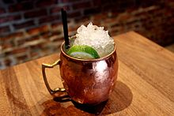

|  |
History of the Moscow MuleOne story is that the cocktail's inventor was a head bartender at a New York City bar and the drink was born out of a need to clear the bar's cellar, packed with unsold inventory of volka and ginger beer. "I just wanted to clean out the basement," the bartender said, "I was trying to get rid of a lot of dead stock." The first one he mixed he served to the actor Broderick Crawford. It became very popular! |